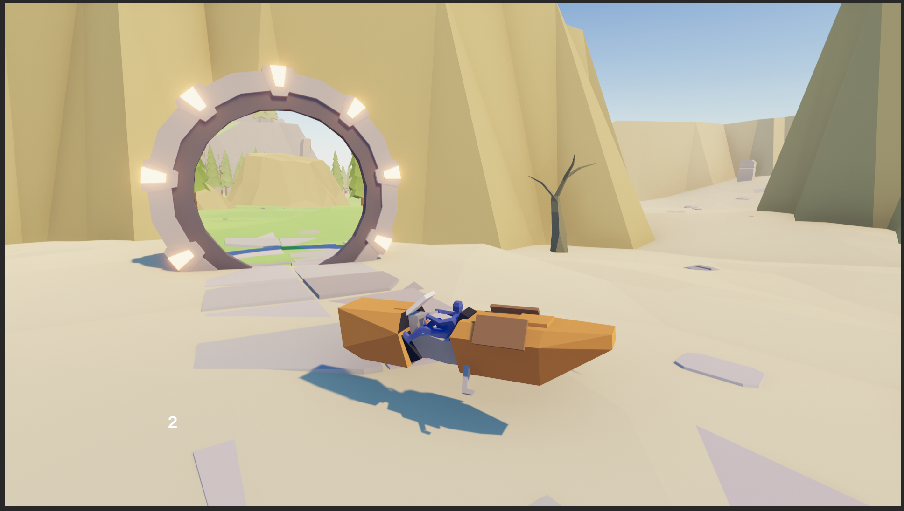

Game Development
2024
Hoverbike

Hoverbike is a solo-developed game created in Unity. The idea was to control a hoverbike and explore an open area with ancient ruins. There are three worlds the player can discover, which are connected by gates, similar to those in Stargate, which inspired me.
Click on this Google Drive link to download the playable game, extract the folder, and execute the .exe file. The game is playable with an Xbox controller or when opened via Steam using the controller button mapping.
Development Process
Hoverbike is a solo-developed short game created in Unity. The idea was to control a hoverbike and explore an open area with ancient ruins. I started by coding the behaviour of the hoverbike and then worked on the portal feature, which turned out really well. Then I modeled the hoverbike in Blender and built the environment using LMHPOLY assets.
The Gate
When designing the portal feature, I encountered a problem. While I found inspiration for solving the seamless transition by having a plane that renders an image of the view relative to the other portal, I still had to solve the problem of what happens to the surrounding environment when viewed from a third-person perspective. Because the surroundings would change instantly when viewed from outside the hoverbike's point of view, I had to force the camera's position to only show the portal. This behaviour can be seen in the video at the end.


Movement and Features
The player can move freely in 360°, accelerate, brake, turn on the spot, or use nitro. Nitro comes in three stages: red, yellow, and blue. Using nitro itself is not faster than normal speed, but when it is stacked by timing each use correctly, the next nitro input increases speed, up to blue nitro.


Gameplay
This video shows the second and third worlds.